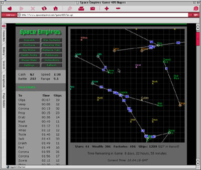

Trials, Triumphs & Trivialities #63: Trials, Triumphs & Trivialities #63:
Galactic Empires, Part Two: Expanding into SpaceMarch 7, 2002 – Next week, if I've paid all my karmic balances correctly, we'll be releasing a new game at Skotos called Galactic Emperor: Hegemony. It's a strategic game that's tested and works well, and we're also going to be doing our best to expand it into a roleplaying arena. I think each of those topics is worthy of discussion in and of itself, so I've decided to split my discussions of Galactic Emperor: Hegemony into two parts. This week I'll talk about the strategic game that is, and next week I'll ponder on the roleplaying game that could be. Clearly a strategy game is a very different thing from the online multiplayer roleplaying games that I usually cover in this column. However, I think much of the process of game design is quite similar. You make decisions, you implement them, and players react in certain ways, which you must in turn react to. As you move through several iterations, hopefully your game improves. So, let me tell you about the strategy game that would become Galactic Emperor: Hegemony, both as we originally discovered it, and through some changes that we've suggested since. Beginning with Space EmpiresThe heart of Galactic Emperor: Hegemony is what's billed as "Play by Web" game named Space Empires. It was designed, developed, and engineered by just one programmer — a gentleman by the name of Richard Wolfe. It's a simple CGI-based game with a combination HTML/Java interface. It's a game of combat where you have a three-week period in which you try and take over the galaxy. Spaces Empires has very simple mechanics and a very simple interface. That's much of the beauty of the game. You and eleven other players start out in a galaxy of 150 worlds. On your homeworlds, each of you have 250 starting ships. Surrounding your homeworlds, and creating an initial firebreak for the impending hostilities, are 138 neutral planets, each protected by a tiny little garrison of between 2 and 20 ships. The object, clearly, is to take as many of those other planets as you can with your fleet of ships. Ships can do two things: move and fight. Movement is limited by distance (initially 6 parsecs) and speed (initially 3 hours per parsec). All this ship movement happens in real-time, but it's a very slow real-time. Planets tend to be at least 3 parsecs apart which means that transport from one planet to another would take at least 9 hours at the start of the game. Combat is mostly based on raw numbers of ships, though there are a few additional factors like defensive bonus, home planet bonus, and a player's battle bonus. To add a little complexity to the game, you also start off with a small sum of money, around $200 or so if I recall, and that money can be used for a variety of things: building factories which create new ships every day ($5 each); increasing the range of your ships ($5 per .1 parsec); increasing the speed of your ships ($20 per 5 minutes/parsec increase); and increasing battle ($10 per point). Every planet you control also adds to your daily wealth. You can also buy spy probes ($10) to figure out the contents of a planet (wealth, factories, and ships) and a spy shield to block that ($30); and a death probe to totally nuke a planet ($200) and a death shield to protect it ($200). And that's pretty much the game in a nutshell. Christopher Allen found Space Empires late in 2000. I played a trial game in December of that year, then a regular game in 2001. I found it very addictive, as did several of my coworkers. It was a rarity, a well designed free game on the Internet, so we started talking about adding it to the Skotos site. Clearly that process took a while. As for what made Space Empires a good game ... Success Through Complex SimplicityIn Trials, Triumphs & Trivialities #39, Ah, Sweet Simplicity of Life! I mentioned that one of the chief criteria in creating a good game was simplicity, but last week in Trials, Triumphs & Trivialities #62, Galactic Empires, Part One: Failing at Succession I noted that that really meant a small number of systems, not simplicity within those systems — as the latter would lead to boredom, and thus game failure. I think Space Empires starts out on a really good food by keeping the number of game systems low, but also having some variety in each of them. Here's how I'd lay all the game systems out:
As you can see there's a very small number of game systems in Space Empires — just two big ones and two small ones. However, each of these systems branches out to multiple choices, and there are multiple interrelations between the systems. Thus, simple design leads to complex strategy. For example, wealth can be used to purchase more ships (via factories), or better ships (via battle), or ships which can be more places quicker (via speed), or ships which can get to further away places (via range). Which is the best investment strategy? Some of these answers are pretty easy — for example, range usually isn't that useful until the exact moment that you want to get somewhere that you couldn't otherwise get to. But what about the other decisions, between factories, battle, and speed? Typically factories seem to be the best answer, but in the last game I played my maxed out speed helped me destroy an opponent's financial empire. There are multiple right answers, and that's what makes the strategy compellingly complex. The interrelations between the systems just multiply this complexity. Do you spend money on spy probes to judge an opponent's strengths or save the money for some manner of ship improvement and attack blindly? Do you leave your own wealth and factories vulnerable to attack in order to stage an assault upon your opponent on the chance of crippling him? Do you spread out your factories to avoid death probes or do you consolidate them on your home planet to make them easier to defend? I think every player has his own strategy, and maybe multiple strategies at different times in the game, and thus the game stays compelling. Some Other Things Space Empires Did RightHopefully the above helps to explain what makes Space Empires a good game. Quite simply, Richard Wolfe did his homework and thought carefully about how to design systems, keep them simple, and still make them interesting. Yet, there are a number of other things which contribute to the success of the game, and raise it up, in my book at least, from good to great. Diplomacy. The one big system that I didn't mention above was diplomacy. It's kind of a touchy-feely system, with no actual mechanics, and thus to me it isn't quite a game system, but rather an extension of the multiplayer online medium. Quite simply, after you've played a single game of Space Empires it becomes clear that you need friends to win — or at the least that you need to be carefully diplomatic. As you probably determined from my initial description of the game, every player starts out exactly the same. Thus if I attack Joeblow, the player nearest me, I should have approximately a 50% chance of success, modified by how our relative strategies work out. However, if I attack Joeblow and convinced Fredbob on the other side to attack at the same time, our chances of success are going to be much higher. As the game expands and opponents begin to fall, the maxim remains true. A game that was just good would probably have presumed that players would figure out ways to get ahold of each other and let it go at that. Space Empires, on the other hand, makes that Diplomacy prominent. It's one of the buttons on the standard GUI. There's also support for the transfer of message in-game. Giving diplomacy that prominence and making it that much easier ensures that diplomacy will occur in games, and thus adds yet another layer of complexity. Regular games also have an added feature: you can give money to other players. This is yet another example of a designer interrelating game systems when possible. After a regular game you can also choose to rate your allies and opponents, creating an EBay-like reputation system, letting you know who to ally with in future games, and who not to. Partially Blind Games. Space Empires also takes advantage of another power of the online game medium, one I described in Trials, Triumphs & Trivialities #34, The Power of the Medium: Individualized Output. At any time you can see the state of the whole galaxy — who rules what — but for all those planets you don't control you don't get to see the information on their wealth or factories. You also can't see your enemies' fleet movements. This creates a delightful feeling of uncertainty throughout the game that you almost never find in a tabletop strategy game. You actually have to make guesses about what your opponents are doing, and try and figure out how to react best to those strategies, and this is yet another factor that adds complexity. If you were making decisions based upon known facts, your path might be much clearer. But making decisions based upon presumptions, guesses, and careful analysis of your enemies is a tricky thing. Clear Cause and Effect. When I was talking about Galactic Emperor: Succession last week I mentioned that one of our problems was that we muddled cause and effect. Players didn't know what reactions they could expect from their actions. In Space Empires it's very obvious. Your success against your opponents is based upon your ship numbers, your ships' battle prowess, and a few simple additional factors like defensive bonus. I know if I launch 100 ships at a planet I can generally figure to take out 90-100 enemy ships, and if I take out less it's probably because they're a lot better at battle than me, and I need to take that into account in the future. Simple. Appealing to Bartle's Players. I've talked about Richard Bartle's categories of players a few different times — most clearly in Trials, Triumphs & Trivialities #25, Telling Stories, Classifying Worlds. Over in the forums, Christopher Allen suggested that one of the reasons for Space Empire's success was that it actually appealed to a number of different player types: "For the socializers among us the diplomacy and roleplay [are] fun. For the killers winning against real opponents is fun. For the achievers the high scores and stats are fun. For the explorers, wondering what was behind the next star, or what if I tweak my stats this way, is fun." Limited Creativity. Finally, the regular version of Space Empires does something really cool: it lets players name stars as they conquer them. It's a really simple form of dynamism — a very low-level type of creativity — but to me it adds immensely to the game, because I can feel like I'm really creating something, really putting my stamp on the world, even if it's an ephemeral world that only lasts three weeks. The Limitations We SawBy now you probably have a simple picture of the game. Let me expand upon it just a little bit, to make sure we're all on the same page: In Space Empires every player has a fleet of ships. He can move any number of ships from the planet they're on to any other planet within their range, which takes a certain amount of real time. At a game's start a player typically divides his fleet of 250 up into smaller fleets and jumps them out to the nearest planets, creating a spherical empire out from his home planet. When we at Skotos first played this game we thought it worked great, but we also saw a few problems in the design that could limit the game's appeal:
I've played three games of Space Empires to date, the third of which is just finishing up as I write. One of those games was a regular game, and the other two were trial games. During the regular game I was obsessive. I checked the game status hourly. I had my wisdom teeth out during the middle of that game, and for a while was having to wake up in the middle of the night to take additional narcotics for the pain. I checked in on the game then too, my dark office, lit only by the glow of my CRT. I was obsessive and I kicked butt, scoring the highest score ever on the game, while one of my allies scored #2. My ally's score held for a few months. My own has just been beaten now, in the last few weeks, after standing for over a year. I don't think this was all a coincidence. So, when we first started talking with Richard Wolfe about Space Empires we suggested some ideas to resolve what we saw as the game's only limitations, and thus make it more fair to a less obsessive player than I. Here's what we came up with:
I don't have much more to say on these issues. They were mainly intended to offer a very real world example of the type of problem analysis that should go into the design of any game and also the type of problem solving that should go into fixing things. I'd also make the following larger points:
So What's All This Have to Do with Skotos?Although I hope you've all found this game design analysis interesting, I'm sure there's some of you who are wondering, "What's that gotta do with Skotos?" After all, Space Empires is a strategy game while Skotos is mainly an RPG community. That's what I plan to talk about next week in "Building a Hegemony", the column originally planned for this time: why we decided to add Space Empires to the Skotos community and what we're planning to do to make it an even better fit. See you then, and hopefully in Galactic Emperor: Hegemony before that.
|